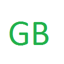
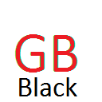

- You just
- Did you not mean to do that?
- I've changed my mind!
- Open Settings
This page is not monitored.- This is a built-in page which is a part of Chrome.
- Open Settings
- This site is on your whitelist
- This page is matched under the whitelist rule for
- Remove from Whitelist
- Open Settings
- This site is not on your whitelist
- You may wish to avoid opening any whitelisted sites until you have closed all non-whitelisted ones.
- Add to Whitelist
- Open Settings
You have mixed tabs open- This site is on your whitelist, but other non-whitelisted tabs may have access to its data
- Remove from Whitelist
- Close non-whitelisted tabs
- Open Settings
- 
You have mixed tabs open
- This site is not on your whitelist, and may be able to access data from other open tabs
- Add to Whitelist
- Close non-whitelisted tabs
- Open Settings